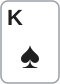

안녕하세요. 오늘은 프리플랍에서 들어가는 방법 하나를 고쳐 볼게요. 바로 오픈 림프예요.
앞에서 다 폴드했는데 핸드가 애매하면, BB만큼만 슬쩍 맞추고 들어가고 싶어지죠. 싸고 안전해 보여요. 오늘은 그 선택이 왜 생각보다 비싼지, 한 장면을 두 번 쳐 보면서 따져 볼게요.
이 글에서 배울 것
- 오픈 림프가 무엇이고, 같은 핸드라도 들어가는 방법에 따라 팟을 가져올 기회가 어떻게 달라지는지
- 림프가 "싸게 보는 것"이 아니라 가격을 뒤 사람들에게 맡기는 것인 이유
- 아무도 안 들어왔을 때 "레이즈 아니면 폴드"로 정하는 기준과, 그 기준이 통하는 범위
1단계. 오픈 림프가 뭔가요?
한 줄 정의
림프 = 프리플랍에 레이즈 없이 BB 금액만 맞춰 들어가는 것이에요.
그중 오픈 림프는 내 앞에서 아무도 판에 들어오지 않았을 때 내가 처음으로 림프하는 거예요. 앞사람이 이미 림프한 뒤에 따라 들어가는 건 상황이 달라서, 오늘은 "처음 들어가는 사람"의 선택만 봐요.
처음 들어가는 사람에게는 선택지가 셋
앞에서 모두 폴드했다면 우리가 고를 수 있는 건 세 가지예요.
- 폴드: 이번 판은 쉬어요
- 림프: BB만큼 내고 들어가요
- 레이즈: BB보다 크게 올리고 들어가요
오늘 제목의 주장은 이 셋 중 림프를 빼고 생각하자는 거예요. "들어갈까 말까"를 먼저 정하고, 들어갈 거면 레이즈, 아니면 폴드. "어떻게 들어갈까"를 따로 고민할 필요가 없게 만드는 기준이에요.
2단계. 한 장면을 두 번 쳐 보기
오늘의 장면
6인 테이블, 블라인드는 SB 0.5BB, BB 1BB예요. Hero는 CO(버튼 1칸 앞, B03에서 배웠죠)에 앉았고, 핸드는 K♠J♦예요.

UTG와 HJ가 폴드했어요. 이제 Hero 차례이고, 뒤에는 BTN·SB·BB 세 명만 남았어요. 버리기엔 아깝고, 크게 가기엔 살짝 겁나는 핸드죠.
첫 번째: 림프로 들어가면
Hero가 1BB만 내고 림프해요. 뒤 사람들 눈에는 "들어오는 데 1BB면 되는 판"이에요.
BTN은 1BB에 따라 들어올 수 있어요. SB는 이미 0.5BB를 냈으니 나머지 0.5BB만 채우면 되고, BB는 한 칩도 더 내지 않고 체크로 플랍을 볼 수 있어요(B01에서 봤죠). 모두 들어오면 네 명이 4BB 팟으로 플랍을 봐요.
플랍이 Q♥8♣3♠로 깔렸어요. Hero는 아무것도 못 맞췄고, 세 명 중 누가 Q나 8을 들었는지 몰라요. 여기서 벳해서 팟을 가져오려면 세 명이 모두 접어야 해요.
두 번째: 레이즈로 들어가면
같은 자리, 같은 K♠J♦로 이번엔 2.5BB로 레이즈해요(레이즈 금액을 어떻게 정하는지, 자세한 건 B10에 정리돼 있어요).
이번엔 뒤 사람들의 계산이 달라져요. 들어오려면 2.5BB를 맞춰야 하니까요. BTN·SB·BB가 셋 다 폴드하면, Hero는 카드 승부 없이 깔려 있던 블라인드 1.5BB를 그대로 가져와요.
누가 콜해서 플랍을 봐도 상대는 한두 명으로 줄어 있을 수 있어요. 그리고 Hero는 마지막에 공격한 사람으로 플랍을 맞아요. 3단계에서 볼 주도권이에요.
두 장면을 나란히 놓으면
| 림프 | 레이즈 | |
|---|---|---|
| 프리플랍에 바로 팟을 가져올 수 있나 | 없음 | 셋 다 폴드하면 1.5BB |
| 들어오는 값은 누가 정하나 | 뒤 사람들 | Hero |
| 플랍에서 상대 수 | 늘기 쉬움 | 줄기 쉬움 |
| 플랍에서 Hero의 모습 | 그냥 따라온 사람 | 마지막에 공격한 사람 |
Hero 손의 카드는 똑같은데, 팟을 가져올 기회가 달라졌어요.
3단계. 팟을 가져오는 두 가지 길
길은 원래 두 가지
포커에서 팟을 가져오는 방법은 두 가지예요.
- ① 모두가 폴드해서 혼자 남기
- ② 쇼다운에서 더 좋은 핸드 보여 주기
레이즈는 프리플랍부터 이 두 길을 둘 다 열어 둬요. 모두 접으면 ①로 끝나고, 누가 따라오면 플랍 이후에 ①이나 ②로 가요.
림프는 프리플랍의 ①번 길을 닫아요
림프하면 프리플랍에서는 ①번 길이 사라져요. BB가 체크만 해도 판이 플랍으로 넘어가니까, 프리플랍에 누구도 접게 만들 수 없어요.
①번 길이 아예 없어지는 건 아니에요. 림프한 Hero도 플랍·턴에 벳해서 상대를 접게 할 수 있어요. 다만 그 길이 좁아져요. 접어야 할 사람이 늘어났고(오늘 장면은 세 명), 아래에서 볼 주도권도 없으니까요.
주도권: 마지막에 공격한 사람이라는 자리
주도권 = 바로 전 베팅 라운드에서 마지막으로 벳이나 레이즈를 한 사람이 가진 흐름이에요.
비유하면 대화를 먼저 꺼낸 사람이에요. 프리플랍에 레이즈한 사람이 플랍에서 벳하면, 상대는 "아까부터 세다고 말해 온 사람"의 벳으로 받아들일 수 있어요. 그래서 플랍을 못 맞췄어도 벳으로 ①번 길을 한 번 더 노려 볼 수 있어요.
림프한 사람이 플랍에서 갑자기 벳하면 "아까는 싸게 들어오던 사람"의 벳이라, 상대가 덜 믿을 수 있어요. 그래서 같은 벳이라도 폴드를 받아 내기가 더 어려워질 수 있어요.
4단계. 림프는 "싸게 보기"가 아니에요
가격표를 뒤 사람에게 넘기는 것
림프할 땐 "1BB만 내고 싸게 플랍 보자"는 마음이 들기 쉬워요. 그런데 그 "싸게"는 확정된 값이 아니에요.
Hero가 림프한 뒤에도 BTN·SB·BB는 아직 행동하지 않았어요. 그중 누구든 레이즈할 수 있어요. 싸게 볼지 비싸게 볼지는 Hero가 아니라 뒤 사람들이 정해요.
레이즈를 맞으면
K♠J♦로 림프했는데 BTN이 4BB로 레이즈했다고 해 볼게요. Hero에게 남은 선택은 두 가지예요.
- 폴드: 림프한 순간 이미 팟에 들어간 1BB라, 폴드한다고 새로 잃는 칩은 없어요. 다만 그 1BB가 아무 일도 못 한 채 끝나요. 플랍도 못 보고요
- 콜: 4 − 1 = 3, 3BB를 더 내고 들어가요. 게다가 플랍부터는 BTN보다 먼저 행동해야 해요
B04에서 배운 것처럼 먼저 행동하는 쪽은 상대가 무엇을 하는지 못 본 채 정해야 하죠. 콜을 고르면 애매한 핸드로, 더 큰 돈을 내고, 나쁜 자리에서 싸우게 돼요.
림프가 뒤 사람에게 주는 것
림프는 뒤 사람들에게 정보도 줄 수 있어요. "레이즈할 만큼은 아니지만 버리기엔 아까운 핸드"로 읽힐 수 있죠. 가게에 들어가서 "그냥 구경만 할게요" 하는 손님 같아요.
그리고 들어오는 값을 1BB로 묶어 둬서, SB는 0.5BB만, BB는 공짜로 따라올 수 있어요. 뒤 사람들에게 들어오기 쉬운 문을 열어 주는 셈이에요.
왜 그럴까: 림프는 어느 쪽 핸드에게도 제일 좋은 선택이 되기 어려워요
들어갈 만한 핸드라면: 레이즈가 낫다
들어갈 만큼 괜찮은 핸드라고 해 볼게요. 레이즈하면 2단계에서 본 것처럼 프리플랍에 바로 이길 기회가 생기고, 콜을 받아도 상대를 줄이고 주도권을 쥐어요.
림프는 그 핸드로 같은 판에 들어가면서 프리플랍에 바로 이길 기회를 버리고, 플랍에서 폴드를 받아 낼 길도 좁혀요. 같은 핸드에서 뽑아낼 수 있는 몫을 스스로 줄이는 셈이에요.
들어가기엔 약한 핸드라면: 폴드가 낫다
반대로 레이즈하기엔 약한 핸드라면? 림프로 들어가도 "싸게"는 보장되지 않아요. 레이즈를 맞으면 1BB를 버리거나 불리하게 따라가야 하고, 안 맞아도 여러 명과 약한 핸드로 싸워야 해요.
그러면 처음부터 폴드해서 1BB를 아끼는 쪽이 깔끔해요.
그래서 처음 들어갈 때는 둘 중 하나
양쪽을 다 따져 보면, 처음 들어가는 자리에서 림프는 좋은 핸드에게는 레이즈보다, 약한 핸드에게는 폴드보다 못한 자리에 끼어 있기 쉬워요. 이 블로그가 초급에서 "레이즈 아니면 폴드"를 기준으로 쓰는 이유예요. 이건 솔버 결과가 아니라 실수를 줄이는 단순한 기준이에요.
그럼 오늘의 K♠J♦는?
CO의 K♠J♦가 들어갈 만한 핸드라고 가정하면, 오늘 기준으로는 레이즈예요. 자리마다 어떤 핸드로 들어가는지는 중급 I11에서 배워요.
만약 같은 K♠J♦라도 더 앞자리여서 "여기서는 들어가기엔 약하다"고 판단했다면, 답은 림프가 아니라 폴드예요. B09의 질문 "이 자리에서 이 핸드 괜찮아?"로 들어갈지를 먼저 정하고, 그다음은 레이즈로 들어가요.
자주 하는 실수
실수 1. "BB가 체크해 줬으니 플랍은 공짜로 봤다" 공짜로 본 사람은 BB예요. Hero는 1BB를 이미 냈고, 오늘 장면처럼 모두 따라오면 그 1BB로 네 명이 나눠 다투는 4BB 팟에 들어간 거예요. 대신 림프를 "공짜 구경"이 아니라 "1BB를 내고 여러 명과 싸우는 선택"으로 봐요.
실수 2. "1BB 냈는데 아까우니까 콜" 림프한 뒤 4BB 레이즈를 맞고 "이미 1BB 넣었으니 버리기 아깝다"며 콜하는 실수예요. 그 1BB는 폴드하든 콜하든 이미 팟의 칩이에요. 지금 정할 건 3BB를 더 내고 나쁜 자리에서 싸울 만한가뿐이에요. 대신 이미 낸 칩은 잊고, 앞으로 더 낼 칩만 보고 정해요.
실수 3. "좋은 핸드를 숨기려고 림프" 아주 좋은 핸드로 림프해서 상대를 속이고 싶을 수 있어요. 그런데 오늘 장면처럼 림프에 셋 다 따라오면, Hero는 4BB 팟을 놓고 상대 세 명과 플랍을 봐요. 셋 중 한 명만 플랍에 맞춰도 좋은 핸드가 질 수 있는 판이 되죠(B09에서 본 "사람이 많을수록 누군가 좋은 핸드"예요). 레이즈했다면 따라오려는 사람은 2.5BB를 맞춰 넣어야 하니, 플랍에서 만날 상대를 줄일 수 있어요. 대신 좋은 핸드일수록 레이즈로 팟을 키우고 상대 수를 줄여요.
"그럼 림프는 절대 하면 안 돼요?"
좋은 질문이에요. 오늘 기준은 "앞에서 아무도 안 들어왔을 때"에만 쓰는 기준이에요.
앞사람이 이미 림프했을 때 따라 들어가는 경우, 그리고 SB처럼 이미 칩을 반쯤 낸 자리는 따져야 할 게 더 있어서 중급 이후에서 다뤄요.
초급에서 이 기준을 먼저 쓰는 이유는 단순해서 실수가 줄기 때문이에요. 처음 들어가는 자리에서 "레이즈 아니면 폴드" 하나만 지켜도, 애매한 핸드로 끌려다니는 판이 줄어들 수 있어요.
선생님의 한마디
앞에서 모두 폴드하고 내 차례가 오면, 이 순서로 물어요.
- "이 자리에서 이 핸드로 들어갈 만한가?" (B09의 질문)
- 들어갈 만하면 레이즈, 아니면 폴드
- 손이 림프로 가려고 하면 한 번 멈추고 "뒤에서 레이즈가 나오면 어떻게 하지?"
연습 문제
학습툴 연습 화면은 준비 중이에요. 아래 문제로 먼저 확인해 보세요.
문제 1. Hero는 BTN, 앞에서 모두 폴드했어요. 두 가지 판을 비교해요.
- (가) Hero가 2.5BB로 레이즈, SB 폴드, BB만 콜
- (나) Hero가 림프, SB가 0.5BB를 채워 들어오고, BB 체크
두 판 모두 플랍에서 Hero는 아무것도 못 맞췄고, 앞사람들이 모두 체크해서 Hero 차례예요. (가) 각 판에서 팟은 몇 BB이고, Hero가 벳으로 팟을 가져오려면 몇 명이 접어야 하나요? (나) 위에서 구한 숫자만 가지고, 림프 판에서 Hero의 벳이 덜 남는 장사인 이유 두 가지를 말해 보세요.
정답 보기
- (가) 팟 = 2.5 + 2.5 + 0.5 = 5.5BB. BB 한 명만 접으면 돼요. Hero는 주도권도 있어요
- (나) 팟 = 1 + 1 + 1 = 3BB. SB와 BB 두 명이 다 접어야 해요. 주도권도 없어요
두 판 모두 Hero는 벳할 수 있어요. 림프해도 ①번 길이 막히진 않죠. 차이는 숫자에 있어요.
- 성공하기 더 어려워요: (나)는 두 명이 둘 다 접어야 하고, (가)는 한 명만 접으면 돼요. 한 명이 접을 만한 플랍이라도, 두 명 중 하나는 맞췄거나 버틸 수 있어요
- 성공해도 덜 남아요: (나)에서 벳이 통해 가져오는 팟은 3BB, (가)는 5.5BB예요. 같은 버튼, 같은 핸드인데 들어가는 방법 하나로 노릴 팟이 작아졌어요
여기에 (가)는 주도권까지 있어서, 같은 벳이라도 상대가 더 세게 받아들일 수 있어요.
문제 2. Hero는 SB예요. 앞에서 모두 폴드해서 Hero와 BB만 남았어요. Hero가 0.5BB만 채워 림프하면, BB에게 무엇을 주게 되나요? 레이즈했다면 BB는 어떤 결정을 해야 했을까요?
정답 보기
림프하면 BB는 한 칩도 더 내지 않고 플랍을 볼 수 있어요. 게다가 플랍부터는 SB가 먼저 말하니, BB는 Hero를 보고 나서 행동하는 자리까지 얻어요. 공짜 플랍과 좋은 자리를 함께 넘겨주는 셈이에요.
레이즈했다면 BB는 돈을 더 내고 따라오거나, 1BB를 두고 폴드하는 결정을 해야 했어요. 폴드하면 Hero가 BB의 1BB를 가져와요. 다만 SB는 이미 칩을 반쯤 낸 특별한 자리라, 림프가 늘 나쁜지는 질문 절에서 말한 것처럼 중급 이후에 더 따져요.
핵심 정리
- 오픈 림프 = 앞에서 아무도 안 들어왔을 때 BB만큼만 내고 처음 들어가는 것
- 레이즈는 프리플랍부터 모두 폴드와 쇼다운 두 길을 다 열고, 림프는 프리플랍의 폴드 길을 닫고 플랍의 폴드 길도 좁혀요
- 림프의 "싸게"는 확정이 아니에요. 값은 뒤 사람들이 정해요
- 림프는 들어갈 핸드에게선 가져올 몫을 줄이고, 안 들어갈 핸드에게선 아낄 수 있던 1BB를 쓰게 해요. 그래서 처음 들어갈 때 림프가 설 자리가 좁아요
- 이 기준은 처음 들어가는 사람의 기준이에요. 앞에 림프가 있거나 SB일 때는 따로 따져요
정리하며
오늘은 CO의 K♠J♦ 한 장면을 림프와 레이즈로 두 번 쳐 봤어요. 같은 카드인데 레이즈는 프리플랍에 바로 끝낼 길과 주도권을 얻었고, 림프는 네 명이 다투는 판에 값까지 뒤 사람에게 맡겼죠. 그래서 처음 들어가는 자리에서는 들어갈 핸드면 레이즈, 아니면 폴드가 깔끔한 기준이에요.
다음 글 B21에서는 다시 룰로 돌아가, 판 사이에 누가 빠졌을 때 버튼과 블라인드가 어느 자리로 가는지 봐요. 오늘은 내 차례에 어떻게 들어갈지를 봤다면, 다음 글은 그 차례를 정하는 버튼이 어떻게 움직이는지예요.
AI 작성 · 원칙 설명 · 블라인드·레이즈 금액은 예시(계산 검증)